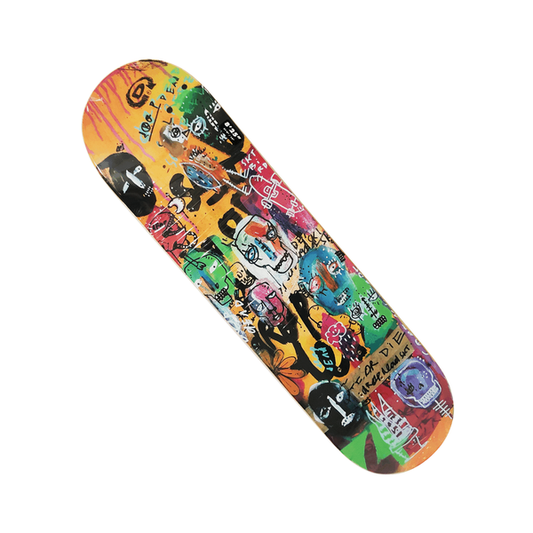
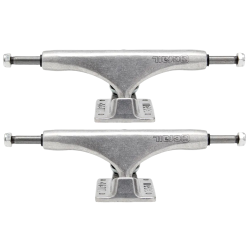
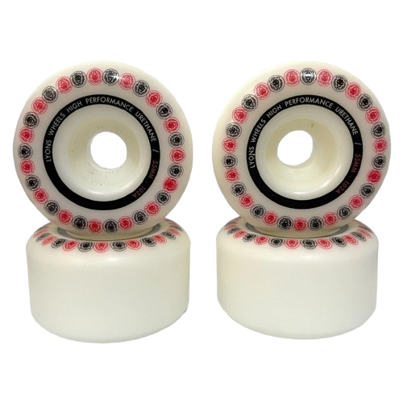
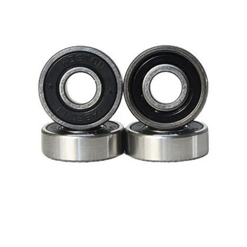
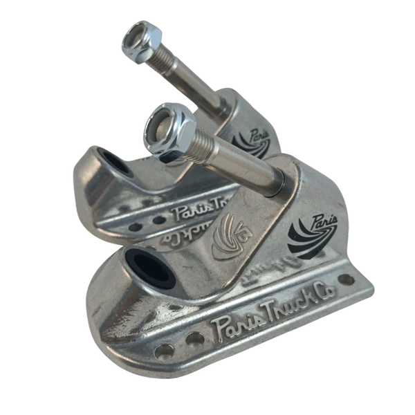
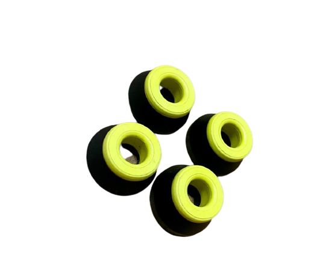
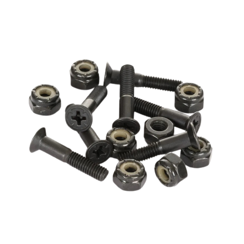
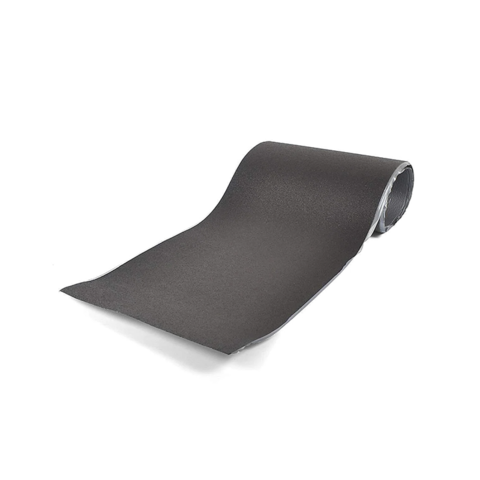

Como surgio o skate ?
Nascido na Califórnia, nos anos 1950, o skate foi criado por surfistas que não queriam ficar parados quando o mar estava sem ondas. Foi aí que surgiu a ideia de colocar rodinhas de patins nas pranchas de surfe e sair pelas ruas da cidade.
Depois das pranchas de surf com rodinhas, a marca Roller Derby lançou, em 1959, o primeiro skate produzido em escala industrial. Ele era o mais simples o possível: tinha uma prancha reta com rodinhas presas por baixo.
As primeiras pranchas eram completamente retas, o que dificultava na hora de fazer manobras, restringindo os pulos às rampas. Até que, em 1979, o norte-americano Alan Gelfand revolucionou o mundo do skate inventando o Ollie: pulo com o skate sem precisar de rampas. A partir daí, inúmeras manobras começaram a ser desenvolvidas.
Para ler mais sobre, clique aqui!
Quais são as peças do skate ?
Shape
O “shape” do skate refere-se à forma e ao design do shape. Ele é fundamental para o desempenho e a manobrabilidade. Os formatos podem variar em vários aspectos shape vêm em diferentes larguras e comprimentos, adaptando-se a diferentes estilos de skate (street, park, vert, etc.).

Trucks
Os trucks do skate são peças essenciais que conectam o shape às rodas e são fundamentais para a manobrabilidade e controle do skate. Os trucks são geralmente feitos de alumínio, o que os torna leves e resistentes. Alguns modelos também possuem componentes em aço para maior durabilidade

Rodas
As rodas de skate são uma parte crucial do equipamento, afetando a velocidade, a aderência e o desempenho geral. A maioria das rodas de skate é feita de uretano, que proporciona uma boa combinação de durabilidade e aderência.

Rolamentos
Os rolamentos de skate são componentes pequenos, mas fundamentais para o desempenho do skate. Os rolamentos permitem que as rodas girem suavemente em torno do eixo, relaxando o atrito e aumentando a velocidade.

Bases
A base de skate, também conhecida como base plate, é a parte dos trucks que se conecta diretamente ao shape do skate. Uma placa de base serve como ponto de fixação dos trucks ao convés. Ela transfere o peso e os movimentos do skatista para os trucks e, consequentemente, para as rodas.

Amortecedores
Os amortecedores de skate, geralmente chamados de "bushings", são componentes importantes dos trucks que ajudam a controlar a flexibilidade e a resposta do skate durante manobras. Os amortecedores permitem que os trucks girem suavemente. Eles absorvem impactos e ajudam a manter a estabilidade durante curvas e manobras.

Parafusos de Base
Os parafusos de base do skate, também conhecidos como parafusos de montagem ou parafusos, são essenciais para fixar os trucks ao shape. Os parafusos de base estão conectando os trucks ao convés, garantindo que as peças permaneçam firmes durante o uso e manobras.

Lixa
A lixa do skate, também conhecida como griptape, é uma parte fundamental do equipamento, pois fornece aderência e controle. A lixa é colada na parte superior do shape e permite que os pés do skatista se mantenham firmes durante a execução de manobras.

Pesquisa feita por AI
O que é o Game Of Skate?
O Game Of Skate iniciou como uma brincadeira e começou a crescer entre os praticantes do esporte. O impulso para o Game se popularizar ainda mais foi dos skatistas Erick Koston e Steve Berra, que decidiram lançar um campeonato neste formato e transmiti-lo pela internet no site The Berrics (Berra + Erick = Berrics). Os competidores tinham de ser profissionais e convidados. A transmissão foi bem sucedida e o site começou a adquirir cada vez mais acessos
As regras são simples: Para a manobra ser validada o skate tem de cair com as quatro rodinhas no chão e o skatista com os dois pés sobre ele. São permitidas apenas manobras no solo. Não vale mãos no skate ou no chão e nem a mesma manobra duas vezes seguida.
Pontuação: O primeiro skatista tenta uma manobra, e se acertar os outros competidores tentam reproduzi-la. Se errarem, recebem a letra “S”, no segundo erro a letra “K”, seguindo assim a cada erro até que alguém complete a palavra “SKATE” e seja eliminado do Game. Caso o primeiro participante erre, o seguinte realiza sua própria manobra e todos têm de repeti-la. O campeonato é de única eliminação, então o skatista avança na competição até perder uma disputa.
Para ler mais sobre, clique aqui!